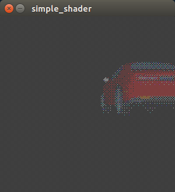

Fragment shader
В этой заметке я постараюсь рассказать как в Processing работать с трехмерными объектами и шейдерами. Для начала инициализируем и рисуем сцену:
float angle;
PShape car;
void setup() {
size(400, 400, P3D);
noStroke();
}
Скачиваем модель машины. Нам необходимы obj и mtl файлы для отображения машины. В файле mtl есть ссылка на текстуру. Именно этот файл содержал абсолютную ссылку на текстуру, так что пришлось поправить его на относительную. Ставим на сцену машину.
car = loadShape("car.obj");
К сожалению главная точка модели стоит не там где нам надо, так что подготавливаем модель. Разворачиваем как надо. Ставим камеру под нужным углом.
car.rotateZ(PI);
car.translate(200,-200,300);
Добавляем свет. Затемним сцену.
ambientLight(51, 102, 126);
pointLight(255, 255, 255, width / 2, height / 2, 100);
Сделаем чтобы нарисованная 3D сцена выводилась на поверхность. Эта поверхность и будет обрабатываться шейдером, так как мы хотим постпроцессинг делать всей сцены, а не только текстуры. Шейдеры обрабатывают лишь текстуры.
Выводим результирующую фигуру и даём ей текстуру с результатом.
beginShape();
texture(img);
vertex(-100, -100, 0);
vertex( 100, -100, 0);
vertex( 100, 100, 0);
vertex(-100, 100, 0);
endShape(CLOSE);
Теперь инициализируем шейдер.
Shader toon;
void setup() {
...
toon = loadShader("ToonVert.glsl");
}
Сам шейдер работает только с одним текселем на поверхности. Благодаря этому достигается распаралелливание обработки изображений. Для того чтобы получить правильно работающий алгоритм мы должны расписать как вычислить каждую конкретную точку. Это не всегда просто. Точка ответа тоже является переменной в которую можно только записать получившийся тексель, называется она gl_FragColor.
Будем использовать алгоритм порядкового дитеринга и перевод всё в цвета ZX Spectrum. В openGL цвета представлены числами с плавающей точкой от нуля до единицы.
Для получения текселя используется функция texture2D. Переменная varying говорит о том что данные к нам приходят из вершинного шейдера. vertTexCoord передаёт позицию данного текселя.
uniform sampler2D texture;
varying vec4 vertTexCoord;
const int indexMatrix8x8[64] = int[](0, 32, 8, 40, 2, 34, 10, 42,
48, 16, 56, 24, 50, 18, 58, 26,
12, 44, 4, 36, 14, 46, 6, 38,
60, 28, 52, 20, 62, 30, 54, 22,
3, 35, 11, 43, 1, 33, 9, 41,
51, 19, 59, 27, 49, 17, 57, 25,
15, 47, 7, 39, 13, 45, 5, 37,
63, 31, 55, 23, 61, 29, 53, 21);
float indexValue() {
int x = int(mod(gl_FragCoord.x, 8));
int y = int(mod(gl_FragCoord.y, 8));
return indexMatrix8x8[(x + y * 8)] / 64.0;
}
vec3 dither(vec4 color) {
float d = indexValue();
float r = color.r + d;
float g = color.g + d;
float b = color.b + d;
float m = max(r,g);
m = max (m,b);
if (m < 0.49) {
r = 0.0;
g = 0.0;
b = 0.0;
} else {
r = r >= 0.49 ? 0.49 : 0.0;
g = g >= 0.49 ? 0.49 : 0.0;
b = b >= 0.49 ? 0.49 : 0.0;
}
return vec3(r,g,b);
}
void main() {
vec4 col = texture2D(texture, vertTexCoord.st);
gl_FragColor = vec4(dither(col),1);
}
Вот результат.
